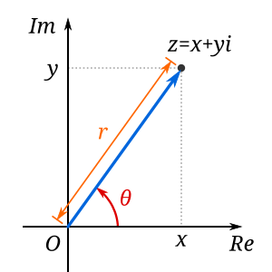

요즘 유튜브에 자꾸 수학 문제 풀이 동영상이 눈에 띈다. 그 중 흥미로운
문제를 발견해 정리해보려 한다. 문제는 를 를 구하는 것이다.
방법 1
처음 봤을 땐 '이걸 어떻게 풀지?' 하는 생각밖에 들지 않았지만, 막상 풀이를
보니 어렵지는 않다. 모든 복소수는 (는 실수) 형태로
나타낼 수 있다는 점에 풀이의 실마리가 있다.
여기서 와 를 구하면 를 구하는 것이 된다. 지금부터는 그냥
방정식 풀이다. 위 식의 양변을 제곱해 정리하면 다음과 같은 식을 얻는다.
위 식이 성립하려면 좌변의 실수부와 허수부가 모두 이 되어야 한다. 따라서
다음 두 식을 얻을 수 있다.
두 번째 식으로부터 임을 알 수 있다. 이것을 첫
번째 식에 대입해 다음과 같이 를 구한다.
는 실수이므로 은 음수가 될 수 없다. 따라서 는
버린다.
도 다음과 같이 구할 수 있다. (와 부호가 같아야 함에 유의한다.)
와 를 모두 구했으므로, 를 다음과 같이 나타낼 수
있다.
그러나 이해되지 않는 게 있다. 는 분명 하나의
복소수인데, 어떻게 두 가지로 해석될 수 있는가? 풀이에서 뭔가를 빠뜨린
것일까, 아니면 복소수의 오묘함에 대한 이해가 부족한 것일까?
유튜브 풀이 영상에서는 가 도 될 수 있음을
고려하지 않았다.
방법 2
혹시나 해서 코파일럿에 물어봤더니 다른 풀이 방법도 알려준다. 복소수
극좌표 형식을 사용하는 방법인데, 훨씬 단순하고 직관적이다. 먼저 임의의
복소수 는 다음과 같이 나타낼 수 있다.

는 실수부는 0이고 허수부는 1이므로 복소평면에서 허수축에 위치한다. 크기는 1이고() 편각은 이므로, 를 형식으로
나타내면 다음과 같다.
는 이므로 는 다음과 같이 나타낼 수 있다.
복소수 극좌표 형식을 사용하면 복잡한 방정식을 풀지 않아도 되고, 답에
와 같은
고스트가 생기지도 않는다.
업데이트: 2025-12-06
위 풀이는 불완전하다. 를 복소수 극좌표 형식으로 올바르게 나타내려면
다음과 같이 해야 한다. 편각에 를 번 더하거나 빼도 가 되기
때문이다.
따라서 를 계산하면 다음과 같다.
는 가 짝수일 때는 , 홀수일 때는 이
된다. 는 위에서 이미 구했다. 따라서 는 다음과 같다.
방법 1에서 구한 결과와 동일하다.
보너스 문제
를 풀고 나서 얼마 후에 보니 유튜브에 흥미로운 문제가 또 올라왔다.
를 풀 수 있냐는 것이었다.
방금 를 풀었으니 별로 어려워 보이지 않는다.
Can you solve this?에서는 굉장히 복잡하게 문제를 푸는데,
복소수 극좌표 형식을 사용하면 훨씬 간단하게 풀 수 있다.
는 위에서 구했으니, 를 구한 후 둘을 더하면 되겠다.
따라서,
사실 임을 알았을 때, 그 다음 계산은 생략할 수 있다.
의 편각이 였는데 의 편각은 이므로,
는 의 켤레복소수(complex conjugate)임을 알 수 있기 때문이다.
계산 결과를 봐도 허수부 부호만 바뀌어 있음을 확인할 수 있다. 켤레복소수를 더하면 허수부는 상쇄되므로
실수부만 두 배 해주면 된다. 따라서 의 실수부인 를 두 배 해주면
답을 구할 수 있다.